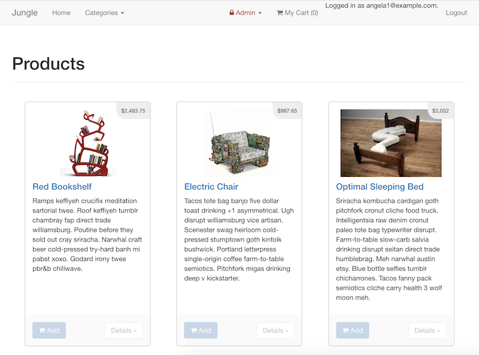

Angela Larryant
A junior web developer with a drive to creatively solve problems and to make things beautiful. My experience working for a start-up designing innovative cookware solidified my passion for the functional and aesthetic. This lead to my interest in front-end web development - I can solve problems with the end goal of producing an eye-catching application that effectively serves its clientele. Additionally, as an eager and open-minded learner, I am keen to sharpen my back-end web development skills so that I can fluorish in a variety of professional environments.
Skill Stack
Languages, Frameworks, & Libraries
JavaScript, Ruby, Ruby on Rails, Node.js, React, jQuery, AJAX, Express, Knex.js, EJS, HTML/CSS/SASS, & Bootstrap
Databases
PostgreSQL & MongoDB
Other
Git, Adobe Photoshop, Excel, & Hootsuite
Projects
Borker
Sept. 2018
Borker is a single-page Twitter clone full-stack web application created with HTML/CSS, JavaScript, jQuery, AJAX, Node.js, Express, and MongoDB. Features implemented include: hiding and revealing the compose container, rendering new posts without refreshing the page, and storing posts in the database. I learned to target and retrieve data from the DOM, allowing me to improve user interaction. This was my first major project using CSS, and it helped me realize how much I enjoy styling and design.

Choo-Choose
Sept. 2018
Choo-Choose is a full-stack polling web application created with HTML/CSS/Sass, JavaScript, jQuery, AJAX, EJS, Node.js, Express, Knex.js, Mailgun and PostgreSQL. It is a collaborative project in which I was the lead front-end developer. Taking care to optimize user experience, I helped implement features such as: designing and connecting the PostgresSQL database, adding and deleting additional input fields, dragging and dropping vote options, and a button to copy voting link to clipboard.Doge Park
Sept. 2018
Doge Park is a chatroom full-stack web application created with HTML/CSS/Sass, JavaScript, React, Node.js, Express, Websockets, and Webpack. Features implemented include: colour assignment to new connections, changing display names, notifying other users of new connections or disconnections, sending and receiving messages in real time, and sending images in the chat by simply typing in the image URL. I was exposed to the various utilities available to developers, such as Webpack and Babel, that improve efficiency and streamlines code.
Jungle
Oct. 2018
Jungle is an e-commerce web application created with HTML/CSS/Sass, Ruby, Rails, and PostgreSQL. It was a Rails learning exercise, in which I implemented validations during the checkout, review, and user authentication process. I established familiarity with Active Record through extensive data retrieval from various tables. As the majority of the application was pre-built, I had to deduce which files to add features to or debug, all while maintaining the integrity of the application's foundation.Employment
Ensembl.
Social Media Intern
Jan. 2018 - Aug. 2018
Vancouver, BC
- Maintained brand image through targeted social media interaction to increase number of followers.
- Produced high quality food photography and engaging blog posts on theme.
- Demonstrated organization and commitment through posting daily on several social media platforms, and successfully used Hootsuite to efficiently do so.
- Designed on-brand promotional material for product launch.
Burnaby Association of Community Inclusion
Contract Administrator
Feb. 2017 - Sept. 2018
Vancouver, BC
- Improved communication skills by serving as the point of contact between the organization and Community Living BC.
- Interpreted funding contracts and validated the agreement terms before processing.
- Maintained accurate records of supported individuals and their funding and programs.
- Participated in the development of an improved contract processing workflow that minimizes the risk of errors and leads to greater communication between parties.
London Drugs
Photo-Electronics Specialist
Jun. 2011 - Jun. 2017
Vancouver, BC
- Developed attention to detail through processing passport photos to meet rigorous standards.
- Suggested the best medium to display clients' treasured photographs based on their unique requests and circumstances.
- Improved eye for aesthetic through colour correcting and cropping clients' photographs.
- Designed promotional materials for product display using Adobe Photoshop.
Education
Lighthouse Labs
Web Development
Sept. 2018 - Nov. 2018
Vancouver, BC
University of British Columbia
Bachelor of Science in Food, Nutrition, and Health
Sept. 2013 - Nov. 2018
Vancouver, BC